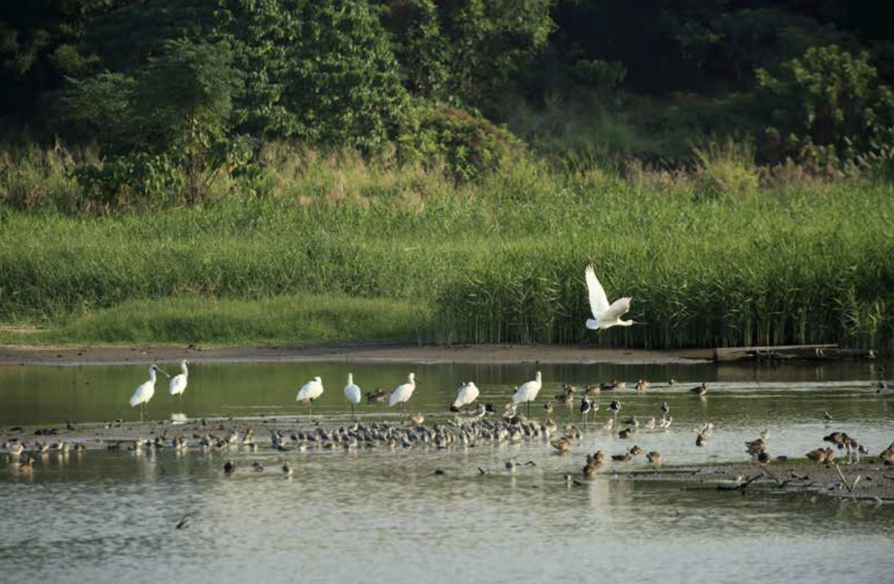

Tides, distance, and waiting: birdwatching as an urban way of seeing in Guangzhou.

This piece follows a beginner birdwatcher (“new bird”) through Guangzhou’s wetlands, campuses, and botanical gardens. Birding is not only about rare sightings; it’s a method—keeping distance, reading tides, and learning to identify what you used to overlook. Once you start naming birds, the city’s everyday scenery reorganizes itself.
Excerpt 1: The “Obsession” and the Moment of Seeing
When I first started preparing this story, almost every seasoned “birder” told me Guangdong’s birds aren’t especially diverse. But whenever I asked if there were any “star” species, they all mentioned the same thing: go to Shenzhen’s mangroves and see if you can meet the black-faced spoonbill. It’s a strange name—and because it came up again and again, I remembered it immediately. I even developed a kind of obsession: this time, I had to see it.
Birdwatching involves a lot of chance. But “beginner’s luck” may exist. Not long after we entered the Futian Mangrove Nature Reserve, Tian Suixing pointed to the fishponds in the distance: “A flock of black-faced spoonbills.” There were eleven. They were resting on a shallow patch in the middle of the pond. We were so far away, and they had their necks tucked in, backs turned toward us—I struggled to tell what made them different from egrets at all. Same white body, long neck. Tian, however, was certain.
Later, as the tide went out, we returned to the river mouth. The water that had covered everything in the morning had receded, exposing the mudflat. And there—one black-faced spoonbill was feeding at close range. Only then did I finally see what it looked like. Unlike the elegant movements of its cousin the egret, the spoonbill looked almost comical. Once you’ve seen it even once, it becomes easy to recognize, even from far away.
Standing on the mudflat, it half-opened its long, flat black bill—shaped like a pipa—submerged it in the water, and swept rapidly left and right with its head. The moment it sensed food, it snapped its head up to swallow, then repeated the motion again and again. Its goofy-cute look made me think of a husky. It really is oddly lovable—no wonder it has become Guangdong’s “star bird.”
Excerpt 2: Birding as a Way to Learn the City
Why can raptors circle along the mountainside? Standing halfway up Baiyun Mountain, Lu Suijun pointed to the sky and asked his students. After their excited guesses, he explained: the city below warms the air, hot air rises, cold air sinks to fill the gap; this flow becomes wind, and raptors can spiral along the currents.
This was an outdoor practice class run by Guangzhou No.113 Middle School’s “Bird House,” themed “Go to Baiyun Mountain to see raptors.” Lu Suijun, the program lead, is a biology teacher and deputy secretary-general of the Guangdong Environmental Education Promotion Association.
Although the class was about raptors, we didn’t spot a single one on the way. Even woodland birds were hard to make out among the trees. Lu encouraged students to learn bird calls—so that even if you can’t see a bird, you can identify it by sound: “Hear that? The call that sounds like someone speaking with a mouthful of water is the red-whiskered bulbul. The light-vented bulbul’s voice is hoarser.” Many bird calls are distinctive; for example, the common white-breasted waterhen sounds like it’s crying “ku a, ku a.” One birding skill is to rely on sound—and in Guangzhou, some visually impaired students also join birding activities.
This matches the original intention behind Guangzhou’s birding education: using birdwatching as a key to natural observation. Lu said many students, through birding, go on to watch butterflies and insects, and come to love nature observation. He also enjoys bringing textbook knowledge back into the field, and teachers from other subjects can often find connections between their disciplines and birding.
Excerpt 3: Five Minutes, and the Joy of Knowing
“We’ll wait five minutes,” Liang Xuming told me. “If it doesn’t show up in five minutes, we’ll go look at other birds.”
Beginner’s luck was still protecting me. In less than five minutes, the Japanese robin appeared. It was sparrow-sized, standing on the steps in front of Chen Xujing’s former residence. It slightly raised its orange-brown throat; its round black eyes spun with each tilt of its head, as if scouting the surroundings. Then a red-flanked bluetail showed up nearby—its colors less vivid, a little grayish. Because they are in the same genus, someone joked, “The Japanese robin’s cousin is here.”
I asked Liang why he knew the Japanese robin would appear here. He said it was simple: the bird prefers shady, damp shrubs where insects are plentiful. Wild birds also fear people and won’t stay close to places right by the road. Once you narrow it down, there aren’t many suitable spots. So birding is often about reading the environment: wherever the conditions meet a bird’s needs, that’s where you might find the bird you’re looking for.
In just a few days, I moved from knowing nothing about birdwatching to gradually recognizing birds. A line from A Bird in the Hand described my feeling well: “But before that, I hardly noticed them. As I came to know them, I became happier day by day.” The original English title is “How to be a Bad Birdwatcher.” The author argues no one is a perfect birder, so there’s no need to demand that you identify every bird you see. Failing to name a bird doesn’t mean you’ve failed; it isn’t a signal to quit, nor does it mean birding is meaningless. The more you see, the more you discover, the more you enjoy. Going birdwatching is the right choice.